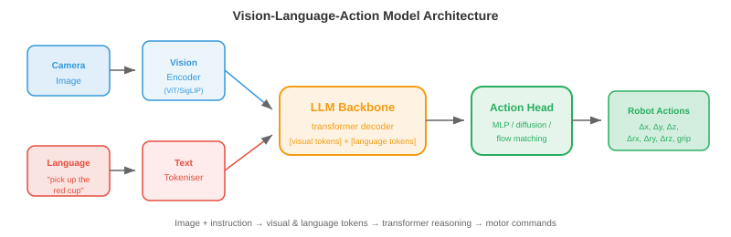
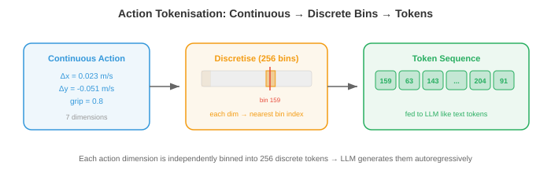

视觉-语言-行动模型¶
视觉-语言-动作模型 (VLA) 将观看、理解语言和动作统一到单个神经网络中。该文件涵盖 VLA 架构、操作 tokenisation、RT-2、Octo、OpenVLA、预训练策略、泛化、与具体实施无关的模型和基准
-
在之前的文件中，我们介绍了感知(感知世界)和机器人学习(控制身体)。传统上，这些是独立的管道：感知模块检测对象，语言模块解释命令，控制模块生成动作。每个模块都是独立设计、训练和调试的。
-
视觉-语言-动作模型 (VLA) 将此管道折叠成单个神经网络。该模型接收图像(视觉)、自然语言指令(语言)，并输出运动命令(动作)。一种模型，端到端。
-
这遵循我们在第 10 章中看到的相同统一趋势：正如多模态模型将视觉和语言理解合并到一个架构中一样，VLA 将其扩展到物理动作。我们的见解是，语言为指定任务提供了一个自然、灵活的界面(“拿起红色杯子并将其放在架子上”)，并且大型预训练视觉语言模型已经理解图像和指令。
从愿景语言到行动¶
-
回想一下第 10 章，像 LLaVA 和 Flamingo 这样的视觉语言模型 (VLM) 将图像和文本作为输入，并生成文本作为输出。他们理解场景、回答问题并遵循指示，所有这些都是用语言进行的。
-
VLA 问：如果输出不是文本而是机器人动作怎么办？该模型不是生成“红色杯子在桌子的左侧”，而是生成一系列运动命令，移动手臂以抓住该杯子。
-
关键的架构见解是操作可以表示为 tokens，就像单词一样。如果 VLM 使用下一个标记预测通过 token 生成语言 token，则 VLA 以相同的方式生成操作 tokens。 transformer 从根本上不关心输出 token 是否表示“杯子”或“将夹具向前移动 2 厘米”。
-
这将机器人控制重新定义为序列建模问题，而 Transformer 擅长于此(第 7 章)。模型学习映射：(图像观察，语言指令)\(\to\)(动作序列tokens)。
学期_0 建筑¶

-
典型的 VLA 具有三个组成部分：
-
视觉encoder：将相机图像处理为视觉tokens。通常是预训练的 ViT (第 8 章)或 SigLIP encoder (第 10 章)。图像被分割成块，每个块嵌入为 token ，与标准视觉转换器中完全相同。
-
语言模型主干：预训练的 LLM(例如 LLaMA、PaLM)，用于处理视觉 tokens 和语言 tokens 的交错序列。这就是推理发生的地方：模型通过关注指令和视觉特征来理解“拿起红色杯子”。
-
动作头：将 LLM 的输出映射到机器人动作。这可以是一个简单的 MLP 将最后一个隐藏状态映射到连续的动作值，也可以是一个 tokenisation 方案，将动作转换为由 LLM 的现有词汇预测的离散 tokens 。
-
-
该架构如下所示：
- 视觉 tokens 和语言 tokens 连接(或交错)并输入到 transformer 主干中，从而自回归产生动作 tokens 。这与 VLM (第 10 章)的架构相同，但输出形式是操作而不是文本。
动作标记化¶
- 机器人动作是连续的：关节速度、末端执行器位置、夹具宽度。这些必须转换为离散的 tokens 以便 LLM 生成它们。

-
最简单的方法是均匀离散化。每个操作维度都分为跨越有效值范围的 \(N\) 个区间。例如，如果 x 速度范围从 -0.1 到 0.1 m/s，并且我们使用 256 个 bin，则每个 bin 代表 \(\frac{0.2}{256} \approx 0.8\) mm/s。操作值被映射到其最近的 bin 索引，该索引成为 token。
-
动作词汇有 7 个动作维度(6 个自由度 + 夹具)和 256 个 bin，动作词汇表具有 \(7 \times 256 = 1792\) tokens。这些将添加到 LLM 的现有文本词汇表中。该模型以自回归方式为每个维度生成一个动作 token ，就像生成单词一样。
-
动作分块同时预测多个未来时间步，而不是单个动作。如果块大小为 \(H\)，则模型输出 \(H \times d\) tokens (其中 \(d\) 是操作维度)。这对于平滑、时间连贯的运动至关重要。一次预测一个步骤可能会产生不稳定的行为，因为每个预测都是独立的。分块迫使模型规划一条短轨迹，捕获时间结构。
-
更复杂的方法使用通过VQ-VAE(第10章)学到的tokenisation。 VQ-VAE encoder 将连续操作序列映射到离散 codebook 索引序列，并且 decoder 根据这些索引重建连续操作。然后 LLM 生成 codebook 索引，而不是统一分箱的值。这类似于图像标记器(第 10 章)如何将视觉信息压缩为紧凑的离散代码。
关键 VLA 模型¶
-
RT-2(机器人变压器 2，Google DeepMind)是第一个大规模的 VLA。它需要预训练的 VLM (PaLM-E 或 PaLI-X，最多 55B 个参数)并根据机器人演示数据对其进行微调。动作表示为文本字符串：token 序列“1 128 91 241 5 101 127”编码 7 维动作(每个数字是一个 bin 索引)。
-
RT-2 展示了一个非凡的特性：从 VLM 骨干转移到机器人的新兴能力。该模型可以遵循涉及机器人数据中从未见过的概念的指令(例如，“将香蕉移到以 A 开头的国家”需要视觉对象识别 + 世界知识 + 行动)。 VLM 的语言理解和视觉推理“免费”。
-
RT-2 的局限性在于它是根据单个机器人实施例(带有特定夹具的特定手臂)的数据进行训练的。它不能推广到不同的机器人。
-
Octo(加州大学伯克利分校)是一个开源的、与具体实施例无关的 VLA，旨在跨不同的机器人平台工作。主要创新点是：
- diffusion 行动头，而不是 autoregressive token 预测。动作头获取 transformer 的输出并通过去噪 diffusion 过程产生动作(第 8 章)。这自然可以处理多模式动作分布(见下图)，其中有多种有效方法可以完成任务。

- **灵活的观察和行动空间**：Octo 针对不同的机器人配置使用特定于任务的标记器。它在 Open X-Embodiment 数据集上进行了预训练，该数据集包含来自 22 个不同机器人实施例的演示。
- **高效微调**：Octo 可以微调为新机器人，只需 100 次演示，这对于数据有限的实验室来说非常实用。
-
OpenVLA(斯坦福大学，加州大学伯克利分校)采用了微调现有机器人开源 VLM(基于 Llama)的方法。它使用 7B 参数骨干、统一操作 tokenisation(每个维度 256 个 bin)，并在 Open X-Embodiment 数据上进行训练。它的优势在于简单：该架构是一个标准的 VLM，并在词汇表中附加了操作 tokens，从而可以轻松地使用现有的 LLM 基础设施进行训练和部署。
-
\(\pi_0\)(身体智能)代表最先进的技术。它使用预训练的 VLM 主干和 flow matching 动作头(第 8 章)。流匹配通过学习将噪声传输到动作分布的速度场来生成动作，从而产生平滑、时间连贯的动作轨迹。 \(\pi_0\) 表现出了非凡的通用性，可以跨多个机器人实施例执行任务，包括双手操作和灵巧的手控制。
预训练食谱¶
-
VLA 受益于预训练的 VLM 主干网，这些主干网已经理解视觉场景和语言。训练流程通常分为以下几个阶段：
-
VLM 预训练：根据来自互联网的数十亿图像文本对训练(或使用现成的)视觉语言模型(CLIP、SigLIP、LLaVA 式训练，如第 10 章所述)。
-
机器人数据协同训练：在互联网数据和机器人演示数据的混合上微调VLM。互联网数据可以防止视觉和语言理解的灾难性遗忘，而机器人数据则可以教授动作生成。混合比例很重要：过多的机器人数据会降低语言理解能力，太少则无法学习动作。
-
特定于任务的微调：对特定任务或机器人的演示进行可选微调，通常使用 LoRA (第 10 章)以保持可训练参数的数量较少。
-
-
机器人数据量比互联网数据小几个数量级。 VLM 可能会在数十亿张图像上进行预训练，但最大的机器人数据集 (Open X-Embodiment) 在所有实施例中仅包含数百万帧。这种数据稀缺性就是为什么从预训练的 VLM 开始是至关重要的：视觉和语言表示转移，并且只需要从有限的机器人数据中学习动作映射。
概括¶
-
VLA 的承诺是泛化：执行训练期间未见过的任务，使用以前未见过的对象，在以前未见过的环境中，遵循以前未见过的指令。
-
VLA 沿多个轴进行概括：
-
新颖的对象：VLM 主干网识别来自互联网预训练的对象。如果模型从网络图像中知道“螺丝刀”是什么样子，即使机器人演示中没有包含螺丝刀，它也可以操纵螺丝刀。
-
新颖的指令：组合语言理解允许模型遵循已知概念的新组合。即使训练仅显示堆叠红色块，“将蓝色块堆叠在绿色块上”也有效，因为该模型可以从语言预训练中理解颜色形容词。
-
新颖的环境：在某种程度上，VLA 可以跨视觉域(不同的桌子、照明、背景)进行传输，因为视觉 encoder 是在不同的网络图像上进行预训练的。但这是有局限性的：在实验室训练的机器人可能会在杂乱的厨房里挣扎。
-
新颖的实施例：这是最难的轴。不同的机器人具有不同的动作空间(关节角度与末端执行器速度)、不同的传感器(手腕摄像头与头顶摄像头)以及不同的物理能力。像 Octo 和 \(\pi_0\) 这样的与具体实体无关的模型通过灵活的分词器和跨多种机器人类型的预训练来解决这个问题。
-
-
泛化是在保留的任务上进行评估的：机器人被要求执行从未接受过训练的任务。与分布任务中 >90% 的成功率相比，新颖任务的成功率达到 50-80% 被认为是很好的结果。随着模型规模的扩大和机器人数据集的增长，差距正在缩小。
与实施例无关的模型¶
-
该领域正在朝着一种模型，多种机器人的方向发展。单个 VLA 可以处理多个实施例，而不是为每个机器人训练单独的 policy 。
-
这就需要解决动作空间不匹配问题。带有平行爪夹具的 7 自由度臂有 7 个动作维度。双手装置有 14 个。四足动物有 12 个。人形机器人有 30 多个。操作 tokenisation 必须足够灵活才能处理所有这些。
-
解决方案包括：
- 填充动作向量：使用最大的动作空间并用零填充较小的动作空间。
- 每个实施例的动作头：一个共享的 transformer 骨干网，具有针对每种机器人类型的单独的小型 MLP。
- 标准化动作表示：在公共框架中表达所有动作(例如，世界框架中的末端执行器速度)，以便产生相似末端执行器运动的不同机器人共享相同的动作tokens。
-
共享主干学习一般视觉和语言理解，以及常见的操作策略(从上方接近、与物体对齐、关闭夹具)。特定于实施例的组件仅需要将这些高级策略转化为特定的运动命令。
基准和评估¶
-
评估 VLA 具有独特的挑战性，因为它需要物理机器人实验(或高保真模拟)。
-
SIMPLER(机器人学习的模拟操作策略评估)提供标准化模拟环境，用于在没有物理硬件的情况下比较 VLA 性能。它与现实世界的成功率密切相关，并支持可重复的基准测试。
-
真实世界评估仍然是黄金标准。典型协议：
- 定义一组具有明确成功标准的任务(物体到达目标位置、选择正确的物体、在时限内完成任务)。
- 每个任务运行 \(N\) 次试验(通常 10-50 次)。
- 报告成功率和置信区间。
- 包括保留的(从未训练过的)任务来衡量泛化能力。
-
Open X-Embodiment 数据集和基准聚合了来自 22 个机构跨多个机器人平台的机器人数据。它提供了用于共享演示的标准化格式和用于跨实施例传输的通用评估套件。
编码任务(使用 CoLab 或笔记本)¶
-
实施操作 tokenisation：将连续操作离散到容器中并重建它们。观察量化误差作为 bin 计数的函数。
import jax.numpy as jnp # Continuous action: 7 dimensions (6 DoF + gripper) action_true = jnp.array([0.023, -0.051, 0.012, 0.1, -0.03, 0.005, 0.8]) action_min = jnp.array([-0.1, -0.1, -0.1, -0.5, -0.5, -0.5, 0.0]) action_max = jnp.array([ 0.1, 0.1, 0.1, 0.5, 0.5, 0.5, 1.0]) for n_bins in [16, 64, 256, 1024]: # Tokenise: map continuous value to bin index normalised = (action_true - action_min) / (action_max - action_min) tokens = jnp.clip((normalised * n_bins).astype(int), 0, n_bins - 1) # Detokenise: map bin index back to continuous value reconstructed = (tokens + 0.5) / n_bins * (action_max - action_min) + action_min error = jnp.linalg.norm(action_true - reconstructed) print(f"bins={n_bins:4d} tokens={tokens} error={error:.6f}") -
模拟动作分块与单步预测。生成平滑轨迹，向单步预测添加噪声，并与基于块的预测进行比较。
import jax import jax.numpy as jnp import matplotlib.pyplot as plt # Ground truth smooth trajectory (e.g., reaching motion) t = jnp.linspace(0, 2 * jnp.pi, 100) gt_x = jnp.sin(t) gt_y = 1 - jnp.cos(t) # Single-step: each prediction has independent noise rng = jax.random.PRNGKey(42) noise_ss = jax.random.normal(rng, (100, 2)) * 0.05 single_step = jnp.stack([gt_x, gt_y], axis=1) + noise_ss # Cumulative drift from single-step errors single_step_cumulative = jnp.cumsum(noise_ss, axis=0) * 0.3 + jnp.stack([gt_x, gt_y], axis=1) # Chunked (chunk_size=10): noise is correlated within chunks, smoother chunk_size = 10 rng2 = jax.random.PRNGKey(7) chunks = [] for i in range(0, 100, chunk_size): chunk_noise = jax.random.normal(jax.random.fold_in(rng2, i), (2,)) * 0.05 chunk = jnp.stack([gt_x[i:i+chunk_size], gt_y[i:i+chunk_size]], axis=1) chunks.append(chunk + chunk_noise) chunked = jnp.concatenate(chunks, axis=0) plt.figure(figsize=(8, 4)) plt.plot(gt_x, gt_y, "k-", linewidth=2, label="Ground truth") plt.plot(single_step_cumulative[:, 0], single_step_cumulative[:, 1], "r-", alpha=0.7, label="Single-step (drifts)") plt.plot(chunked[:, 0], chunked[:, 1], "b-", alpha=0.7, label="Chunked (stable)") plt.legend(); plt.axis("equal"); plt.grid(True) plt.title("Action Chunking vs Single-Step Prediction") plt.show() -
可视化 VLA 的动作分布如何是多模式的。使用简单的二维高斯混合来展示为什么 diffusion/流匹配动作头比回归更可取。
import jax import jax.numpy as jnp import matplotlib.pyplot as plt # Two valid ways to reach around an obstacle: left or right rng = jax.random.PRNGKey(0) k1, k2 = jax.random.split(rng) mode1 = jax.random.normal(k1, (200, 2)) * 0.15 + jnp.array([-1.0, 0.5]) mode2 = jax.random.normal(k2, (200, 2)) * 0.15 + jnp.array([ 1.0, 0.5]) samples = jnp.concatenate([mode1, mode2]) # Regression predicts the mean = average of modes (invalid!) mean_pred = samples.mean(axis=0) plt.figure(figsize=(6, 5)) plt.scatter(samples[:, 0], samples[:, 1], s=5, alpha=0.5, label="True action distribution") plt.plot(*mean_pred, "rx", markersize=15, markeredgewidth=3, label="Regression mean (invalid!)") plt.plot(-1, 0.5, "g^", markersize=12, label="Mode 1 (go left)") plt.plot(1, 0.5, "b^", markersize=12, label="Mode 2 (go right)") plt.legend(); plt.grid(True) plt.title("Multimodal Actions: Why Regression Fails") plt.xlabel("Action dim 1"); plt.ylabel("Action dim 2") plt.show()